.jpg)
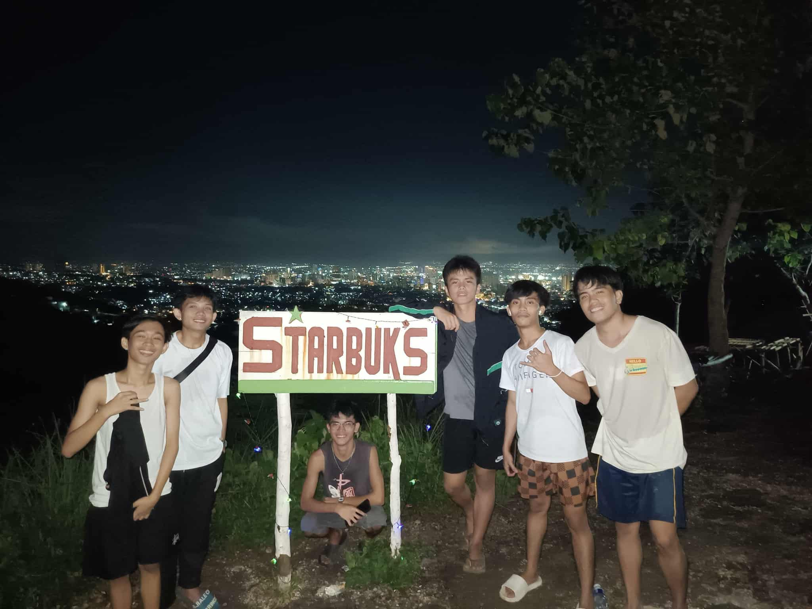
On last DECEMBER 2024, In December 2024, we tried and successfully reached our destination—to go to Starbuks. It wasn't part of our original plan. It was more like a sudden, spontaneous decision that quickly pushed through.
Last MAY 25, 2025, we camped at Tabogon, Kabilin cove over 1 day and 2 nights. We reach there at 9:50pm on May 25. I don't know or I can't remember if we have finished eating.
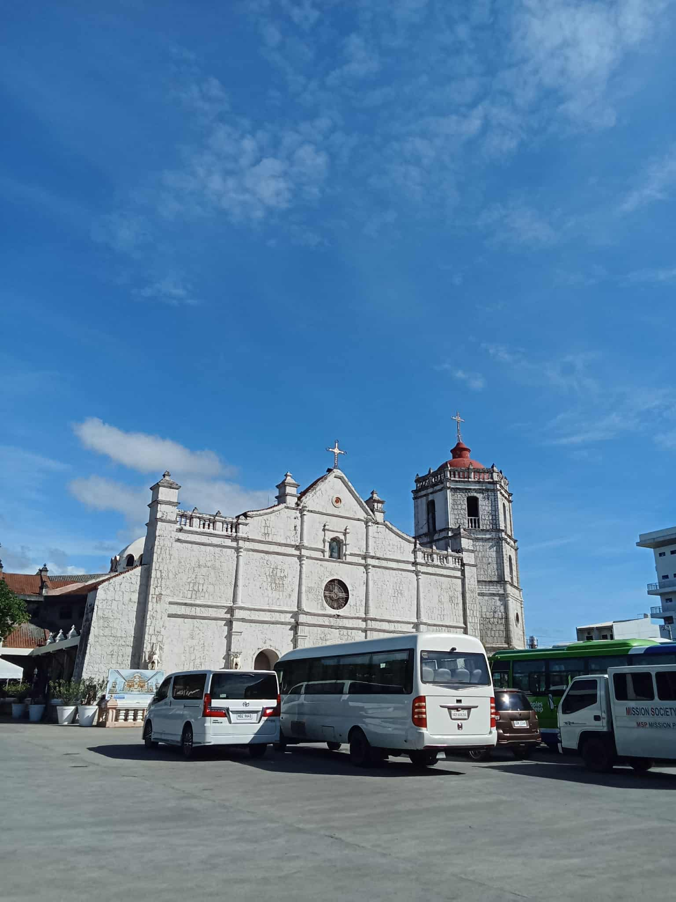
Last May 4, 2025 also we visited the first holy door church here in cebu at Danao, Cebu. We have a pilgrimage that day, and this is the first church we are destined to visit. We didn't stay here long either and went to another place, which is the second church we are going to visit.
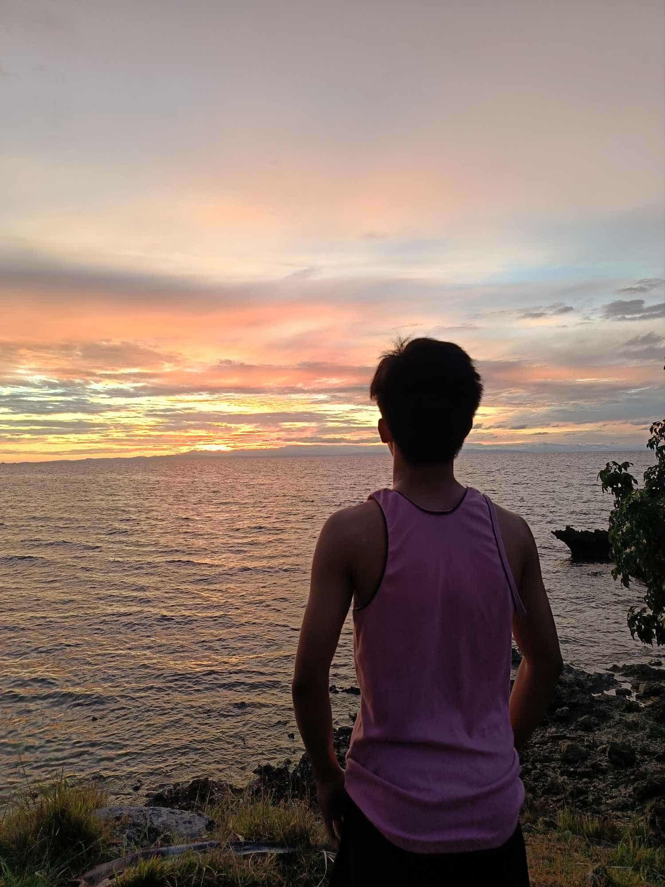
Camp time, that sunrise. I had just woken up that morning during those days and was simply staring at the beautiful surroundings that I had never discovered before. It was the very first sunrise I had ever seen in my whole life.
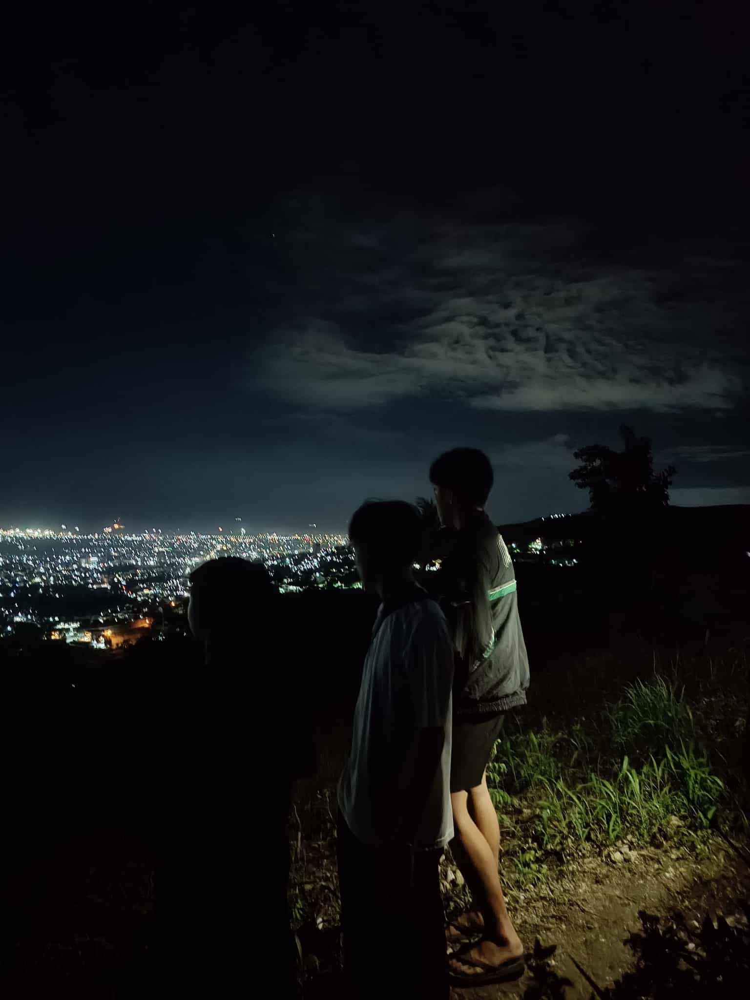
The moment that we almost reach the Starbuks last DECEMBER 2024 we stopped for a while. We were first admiring the beautiful buildings with lights. It felt like we were in a fantasy world at that moment.
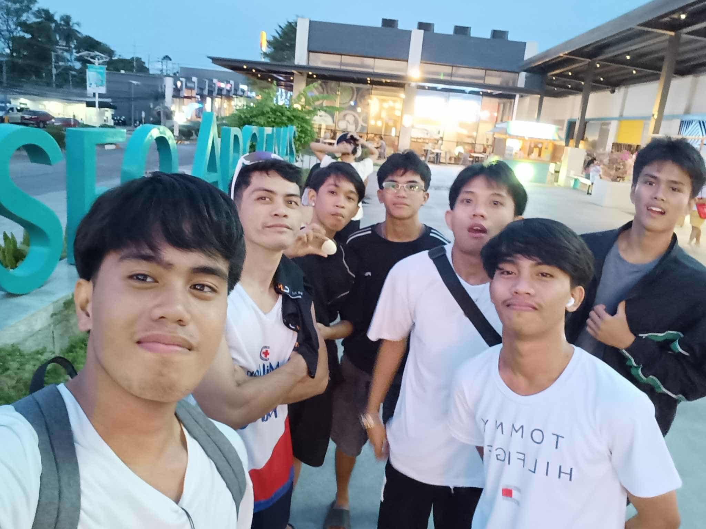
The moment that we bought small foods for our small trip to Starbuks. Even at that time, everyone was already hungry. When we got to Starbucks, I could tell that the food wasn't enough — it was more like something just to tide us over. Good thing we didn't stay there long.
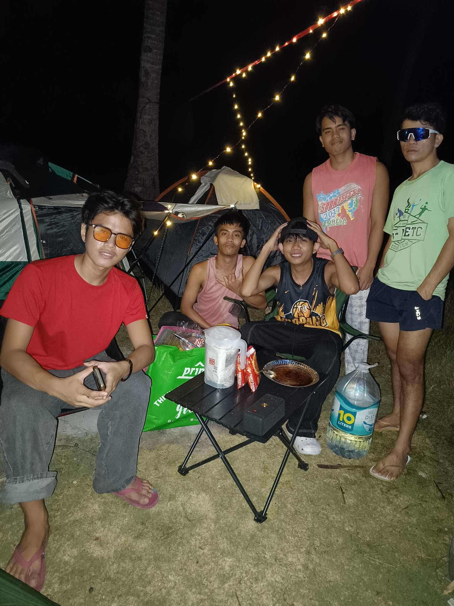
The moment after we install our tents in our camp adventure, we take a picture like waiting for the foods to be cooked. We took quite a few photos while we were waiting for our food to be cooked. The weather was cold at that time, and the hunger really matched the mood — we couldn't wait to eat.
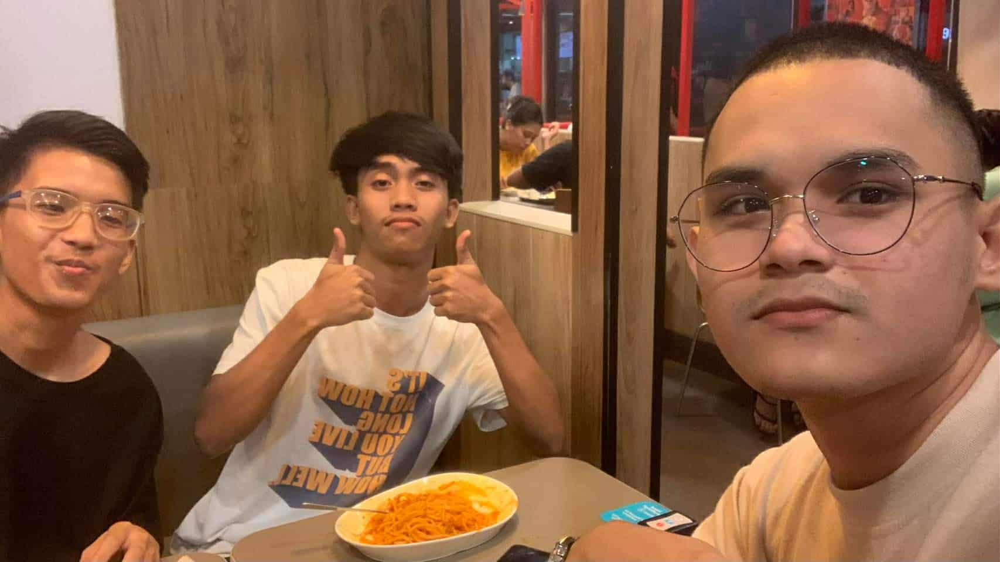
We celebrated the birthday of this smurf in IT DEPARTMENT in University of Cebu last April, 14 2024. This friend of mine on the right side (the one holding the camera) was a BSMT student (back then), but had to stop due to financial problems. He was with us because we had planned this together.
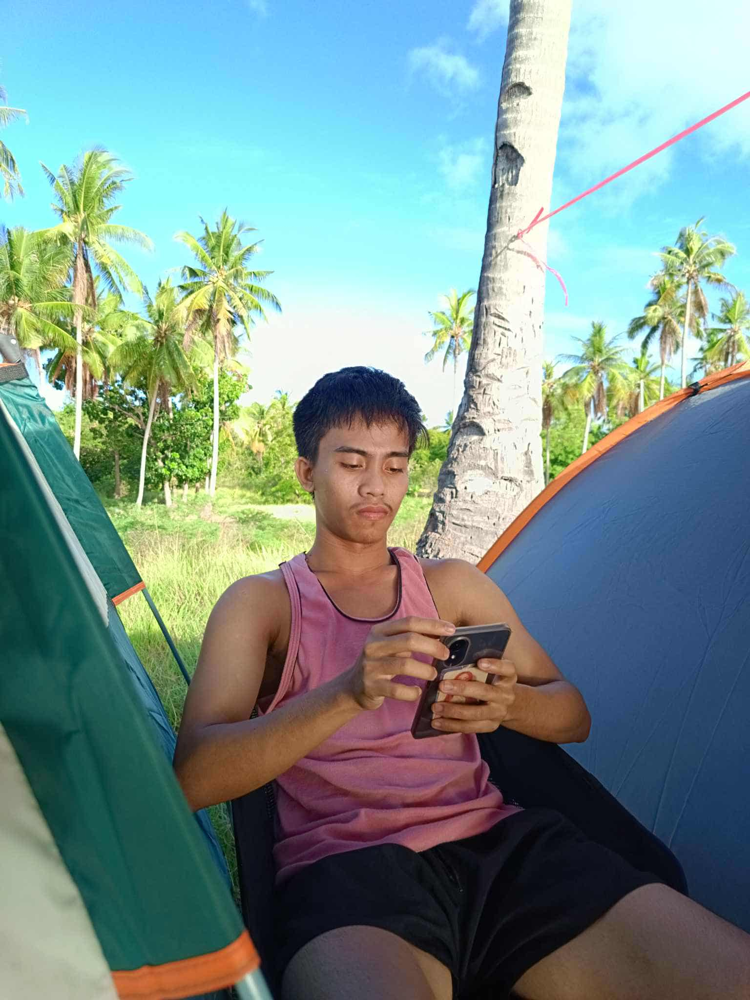
It looks like I was frowning here. It was a stolen picture taken by one of my friends. At that time, the three who were with us went to get some extra food and drinking water from the city. The city was quite a distance from that place.
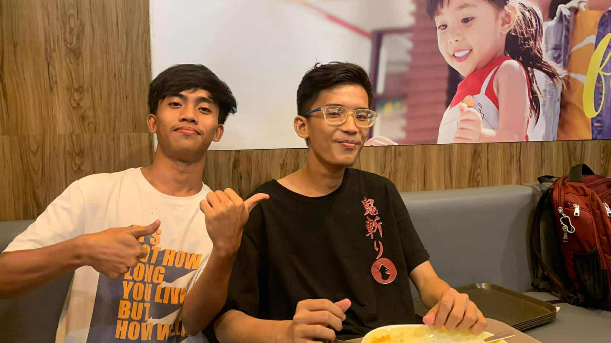
What I meant was, this is my friend who celebrated their birthday on April 14, 2024. I actually requested that it be just the two of us in the photo — so that if ever I die, they'd have something to post. HAHAHA just kidding, of course.
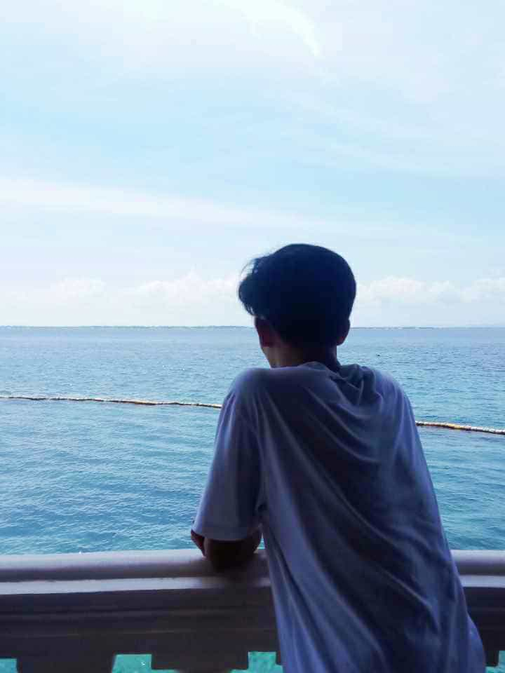
Last year we go to a Resort where I just want to go. But the truth is, we got there cause that place is chosen where to celebrate my Aunt's birthday. But I really enjoyed being with my siblings and cousins, as well as the nieces and nephews from my aunt's side.
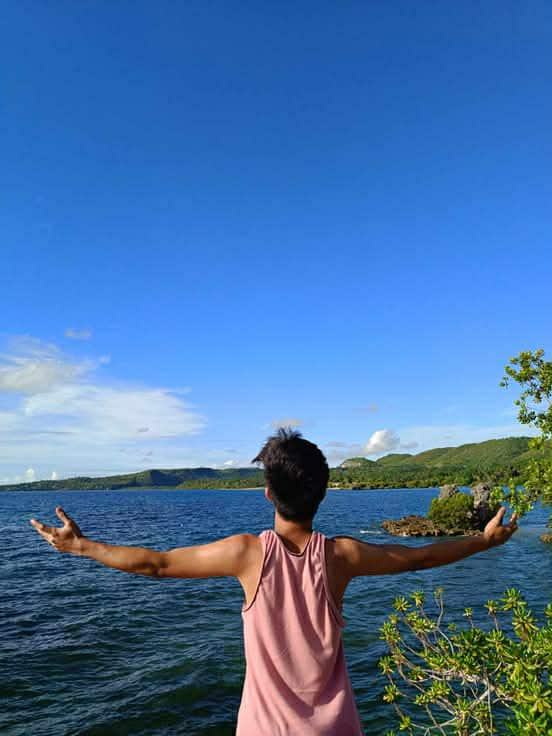
I just wanted to feel the moment like everyone doesn't know how time is so fast, and I make it slow. The air was so fresh during those times. But honestly, I really felt the craving for the sea and how nice it would be to take a swim.
These individuals have once been a significant part of my life. They are the ones who give me a sense of worth, especially in times of difficulty, and they are the first to notice whenever I am struggling, no matter how much I try to hide it. I cannot fully comprehend why they are always by my side or by each other's side. Each of us carries different experiences and challenges. I may not know who is enduring the most, but we all understand that every one of us needs attention, understanding, and prayer. We have faced many disagreements among ourselves, yet these never hinder us from preserving our friendship, for we regard every challenge as a test of our bond.